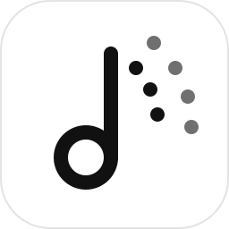

Install SoundTap
Six short steps take your Bose SoundTouch from Bose's software to SoundTap. The install itself takes about five minutes.
SoundTap is alpha software. It replaces everything on the speaker, including the part that starts it. There is a way back to Bose (step 6): read it before you start.
1Which speaker do you have?
Have another model? Help bring it up: the first step is read-only investigation.
2What you need
- The speaker plugged in and still running Bose's software.
- Recent Bose software. Pick your speaker above to see which version it needs. The Bose app shows the version under Settings, Speaker settings, your speaker, About.
- For the easiest route: a computer (Mac, Windows or Linux) on the same Wi-Fi as the speaker, and a speaker that can reach the internet.
- Without internet: a phone or computer with a web browser.
- For the way back: Bose's own update file for your model (
Update.stu), saved before you start. SoundTap does not ship it. Why and how
3Install automaticallyEasiest
One line on your computer finds the SoundTouch speakers on your network that still run Bose's software and asks which ones get SoundTap. Each speaker you pick downloads SoundTap itself and installs it.
This looks like a phone or tablet. The automatic installer runs on a computer; from a phone, use step 4.
-
- A list of your speakers appears. Answer its questions: each speaker you pick then installs SoundTap, and its setup page opens when it is done.
Nothing is installed on your computer, and only the speakers you pick are changed. Curious? Read install.sh or install.ps1.
No terminal? Install from this page by IP address (Chrome or Edge)
This page asks a SoundTouch that still runs Bose's software to download SoundTap from SoundTap's update feed and install it. The speaker stays on your Wi-Fi and does the work itself; it restarts as SoundTap after about four minutes.
Chrome and Edge ask you once to let this page reach devices on your local network: allow it. Firefox and Safari cannot reach a speaker from this page; use step 4 instead.
4Without internet: upload the file
Use this when the speaker has no internet, or when step 3 did not work. A phone with a browser is enough.
- Download the SoundTap file. The same file works on every model.
Looking up the latest release…
Check the download (optional)
Compare the checksum above with the one your computer prints for the file:
shasum -a 256 SoundTap-Core-*.stu # macOS sha256sum SoundTap-Core-*.stu # Linux certutil -hashfile SoundTap-Core-X.Y.Z.stu SHA256 # Windows
- Put the speaker in setup mode. SoundTouch 10 or 20: hold Preset 2 and Volume − together until the speaker opens its setup network. Other models: start setup mode as Bose's manual describes.
- Join the speaker's Wi-Fi network, named Bose …, with the phone or computer that has the file.
- Open the speaker's upload page in the browser:
The speaker is that network's router, normally at
192.0.2.1; a SoundTouch 20 has used192.168.1.1. If the page does not open, use the router address your phone or computer shows. - Choose the
.stufile and send it. The upload takes two to three minutes: keep the page open until it answers.
Is the speaker already on your Wi-Fi with Bose's software? Then setup mode is not needed: open the same page on the speaker's own IP address, for example http://192.168.1.23:17008/update.html.
A first upload has sometimes answered with an error (HTTP 500). Do not send the file again while the speaker may still be writing; the install guide says what to do, and has a route over USB.
5What happens next
- Leave the speaker alone and keep it powered. It writes SoundTap, restarts and comes up as SoundTap in about four to six minutes.
- Do not pull the power while it is busy, and do not send the file again.
- A SoundTouch 20 shows the SoundTap splash on its display about a second after it restarts. It then updates its network chip and restarts once more, so allow extra time.
- A SoundTouch 10 sweeps its lights from side to side while it starts.
- Afterwards the speaker joins the Wi-Fi Bose's software was on. If it does not, it opens its own setup network, named after the speaker (for example SoundTap ST10 A1B2C3): join it, and the setup page lets you pick your Wi-Fi. A SoundTouch 20 needs a 2.4 GHz WPA2 network.
- Then open http://soundtap.local on any phone, tablet or computer on the same network. Updates later come from the speaker's own page.
- Not back after ten minutes? Keep it powered and see When something goes wrong.
6The way back to Bose
On the speaker's own page, open Settings → Updates, choose Bose's Update.stu (the file you saved) and confirm. Hold a button on the speaker for two seconds when it asks, and leave it powered while it writes and restarts.
- It is not a factory reset: Bose's software goes back, but not every byte SoundTap wrote is removed.
- On a SoundTouch 20 the network chip keeps SoundTap's software; putting Bose's back there is still a developer step.
- If SoundTap no longer starts, a USB stick puts SoundTap back. The install guide has the details and every exception.
- Stuck? Open an install or recovery issue: we would much rather help than have a speaker end up in a drawer.